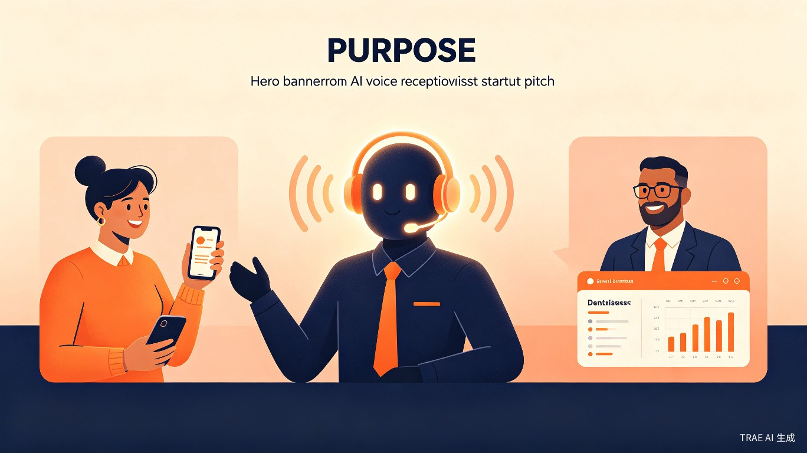

为中小实体商家提供 7×24 小时 AI 电话接听与智能预约服务，让每一通来电都不错过
中小实体商家每年因漏接电话损失的订单高达 20-40%。牙医正在给患者做治疗、律师正在出庭、维修师傅正在爬梯子——这些时刻，电话响了却没人接。
从客户拨通电话的那一刻起，「声聆」接管全流程，商家只需在后台查看结果。
客户来电 → AI 自动接听 → 识别意图（预约咨询 / 查询价格 / 改期 / 投诉）→ 像真人一样自然对话，支持打断、追问、多轮交互。
从对话中提取时间、服务类型、联系人信息 → 自动写入商家的 Google Calendar / 微信日历，实时推送通知给商家。
每通电话自动生成文字摘要（客户需求、处理结果、待办事项），每日 / 每周推送营业报表，商家一目了然。
flowchart LR
A[客户来电] --> B[AI 自动接听]
B --> C{意图识别}
C -->|预约咨询| D[对话确认时间/服务]
C -->|查询价格| E[检索知识库回答]
C -->|改期/取消| F[修改日历事件]
D --> G[写入日历]
E --> H[通话摘要生成]
F --> G
G --> H
H --> I[推送商家仪表盘]
「声聆」专注于电话即商机的中小实体服务行业，这些场景有一个共同点：漏接一个电话 = 丢失一个客户。
| 行业 | 团队规模 | 日均来电 | 核心痛点 | 「声聆」价值 |
|---|---|---|---|---|
| 牙科诊所 | 5-20 人 | 30-80 通 | 医生治疗时无法接电话 | 自动预约，减少前台人力 |
| 空调/水电维修 | 2-10 人 | 15-40 通 | 周末电话最多，但没人接 | 7×24 接听，不漏商机 |
| 独立律师 / 律所 | 1-5 人 | 10-30 通 | 出庭/会议时电话无人接 | 专业话术，初步案情记录 |
| 美容院 / 理发店 | 3-15 人 | 20-60 通 | 预约制，改期频繁 | 自动处理改期，减少纠纷 |
「声聆」采用模块化架构，每个组件可独立替换和升级，确保系统的灵活性和可扩展性。
Whisper / Twilio 语音流实时转写，支持中英文混合识别，延迟 < 500ms。
大语言模型 + 商家知识库 RAG，可配置 FAQ、服务项目、价格表，回答精准且自然。
自然 TTS，支持定制音色、语速，让 AI 声音像真人前台一样亲切专业。
Google Calendar / 微信日历 API，预约信息实时双向同步，冲突自动检测。
Web 端查看通话记录、预约列表、数据统计，支持多门店管理。
flowchart TB
subgraph 语音层
A[Twilio 电话接入] --> B[Whisper 实时转写]
C[TTS 语音合成] --> D[电话语音输出]
end
subgraph 智能层
B --> E[大语言模型对话引擎]
E --> F[RAG 商家知识库]
E --> G[意图识别 & 槽位填充]
end
subgraph 业务层
G --> H[日历 API 集成]
G --> I[通话摘要生成]
H --> J[Google Calendar]
H --> K[微信日历]
end
subgraph 展示层
I --> L[商家 Web 仪表盘]
L --> M[通话记录 & 报表]
end
相比人工前台 3000 元/月，「声聆」最高可节省 90% 成本，且覆盖晚间和周末。
「声聆」是一个典型的多技术栈快速原型项目，恰好能充分发挥 TRAE 的核心优势：
语音引擎、LLM 对话、日历 API、前端仪表盘——多个模块需要在几天内整合，TRAE 的多文件编辑让跨模块修改变得高效。
从后端语音流到前端 React 仪表盘，TRAE 可以快速生成可运行的全栈代码骨架，大幅缩短原型开发周期。
大赛需要可交互的 Demo 页面，TRAE Work 可以快速产出完整的 Web 演示，模拟来电→AI 接听→预约同步的全流程。
一个可交互的 Web 页面，模拟以下完整流程：
flowchart LR
subgraph 客户体验
A[拨号界面] --> B[通话中
实时转写] --> C[预约确认]
end
subgraph 商家仪表盘
D[今日概览] --> E[预约列表] --> F[通话记录]
end
subgraph 后台配置
G[FAQ 管理] --> H[服务项设置] --> I[AI 音色选择]
end